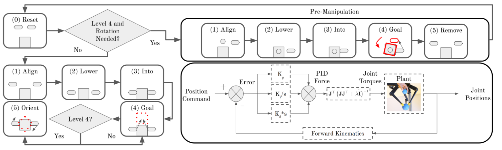
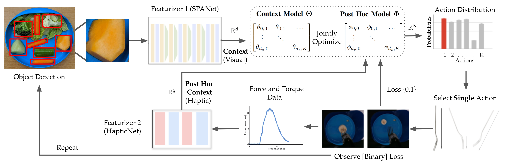
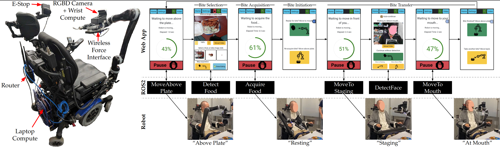
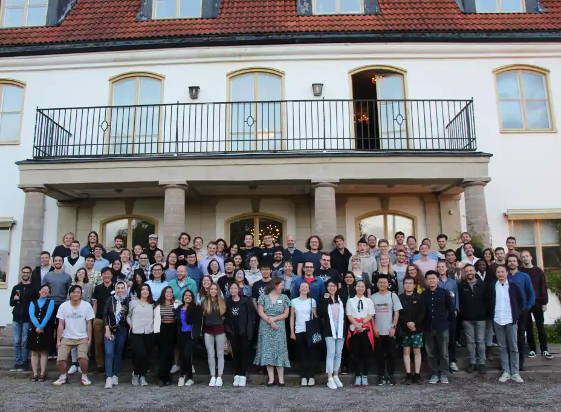

Hi! I'm Ethan!
 I have spent the last 5.5 years at UW as a CSE PhD Student studying Robot-Assisted Feeding for those with Mobility Impairments. Both on and off campus, UW has been a catalyst for my intellectual and social growth. I am grateful for the opportunities I've had in Seattle, and I am excited for the opportunities my PhD has opened up going forward.
I have spent the last 5.5 years at UW as a CSE PhD Student studying Robot-Assisted Feeding for those with Mobility Impairments. Both on and off campus, UW has been a catalyst for my intellectual and social growth. I am grateful for the opportunities I've had in Seattle, and I am excited for the opportunities my PhD has opened up going forward.
Full Personal Website
A Discovery Mindset: Building Complexity
In CSE 573 (Artificial Intelligence), the final project was to build a bot to play Tetris. Instead of jumping right into Reinforcement Learning (RL), it was more fruitful to first develop a good heuristic (clear lines and don't get too high) and build up to RL from there. I took this lesson into my research: It is useful to start with the simplest solution to a problem and add complexity to fill in the gaps.
Experience: Real Robot Challenge 2020-2021
One example of this principle in action was my submission to the Max Planck Institute's Real Robot Challenge in collaboration with Rishabh Madan at Cornell University and later Harshit Sikchi at UT-Austin. The goal was to get a trifinger arm to move a cube to a desired location. Against a slew of competitors using various learning and policy gradient methods, we saw success with just a series of ``motion primitives,'' hand-tuned control strategies that we strung together into a sequence. Our approach was the runner-up.
Experience: Online Learning for Food Acquisition
The exact same principle applied to my research on food manipulation. The goal was to get a robot arm to pick up different types of food. Since it is hard to collect data quickly with food in both the real world and simulation, a full end-to-end learning system would have been tricky to implement. Instead, we asked humans, universal experts at eating, for help. By looking at how humans eat, we created a discrete set of food manipulation strategies. Then, we could just learn which of those strategies would work the best for each food type. For the simple example in the video, the robot learns over time that coming in at an angle works better than straight up-and-down skewering for slippery banana slices. When this solution wasn't enough, we added complexity in the form of haptic information on top of the food images we were using previously.
Connecting the Dots
My Food Manipulation research project is intimately tied with with the user studies I helped conduct in Robot-Assisted Feeding for those with mobility impairments, presented in my Commitment to an Inclusive Community. Food used for this study were based on those preferred by Tyler, one of our community researchers with a mobility impairment.
Commitment to an Inclusive Community
I have been honored to be able to dedicate my work at UW and in Seattle in general to underserved and underrepresented communites, namely, those with mobility impairments and those without secure access to food. The latter has been through my experience doing Food Rescue with the FamilyWorks Seattle Food Bank. The former is presented here:

Experience: Robot-Assisted Feeding
This project has been the primary driver of my PhD. It has spawned may demonstrations and outreach opportunities at conferences and K-12 schools alike. But most importantly, this project has been for those people with mobility impairments: to engender the feeling of independence that comes with being able to feed oneself. This work was driven by two user studies: one in 2020 focused on understand what elements of the system people wanted to be autonomous, and another under double-blind review right now to demonstrate full-meal feeding and understand what work there still is to do to enable a long-term, in-home deployment.
Connecting the Dots
Over the past 5 years on the feeding project, I have moved into a Leadership Role, learning much about project and team management. Additionally, the findings from these user studies act as the North Star for my food manipulation research. My goal was to discover the simplest solution that would actually work in people's homes.
Capacity for Leadership
At UW, I have had the privilege of working with extremely talented undergraduate, graduate, and even high school students as mentees. They have been an integral part of building the robot-assisted feeding system described in the next section. I have applied the lessons from those relationships to more general leadership activities in the human-robot-interaction (HRI) community.
Experience: HRI Pioneers
In 2023, I was part of the HRI Pioneers 2023 cohort, which brings together HRI PhD students to foster creativity and collaboration surrounding key challenges in HRI. I enjoyed the experience so much that I signed up to be the General Chair of the 2024 Workshop. I have learned so much about managing an organizing committee, all while meeting some of the most interesting rising stars in HRI.
Connecting the Dots
I have been able to leverage my experience both in and running HRI Pioneers to connect with the broader HRI Community, which has helped prepare me for my Next Steps in Academia.
Ready for What is Next
My advisors at UW have successfully encouraged me to network with those in my field around the world, and I have been able to parlay that support into a Postdoctoral Research postiion at the University of Pennsylvania, which I will start this Spring.
A key theme of this support and networking has been to build my intellectual flexibility. At the KTH RPL Summer School, I got the chance to meet students from all different backgrounds: HRI, Motion Planning, Task Planning, Robot Learning, Perception, and even Brain-Computer Interfaces to name a few. The goal of that week-long retreat was to collaborate with students from these different fields and propose a research project. It was a challenge to go beyond my HRI comfort zone, and the proposal I submitted with two other students that week went nowhere.
 However, noticing my deficiency in this type of cross-field collaboration, I decided to take an internship at the Honda Research Institute in San Jose, CA. Here, I jumped into a completely new field: In-Hand Robot Tool Manipulation. Over those three months, I was able to formulate a research problem (in this case: Grasp Sequence Planning) and propose and implement a solution. It was a great experience that ended up being the catalyst for the postdoc position I will be starting in April.
However, noticing my deficiency in this type of cross-field collaboration, I decided to take an internship at the Honda Research Institute in San Jose, CA. Here, I jumped into a completely new field: In-Hand Robot Tool Manipulation. Over those three months, I was able to formulate a research problem (in this case: Grasp Sequence Planning) and propose and implement a solution. It was a great experience that ended up being the catalyst for the postdoc position I will be starting in April.
Connecting the Dots
Every aspect of my UW story has helped me get to where I am today. Through the Robot-Assisted Feeding Project, I have developed a greater appreciation for ethical research that includes community stakeholders, ensuring that we are actually solving a problem that improves peopls lives. I have honed in on a successful research ethos: start with the simplest solution and build complexity as the need arises. Through experiences both on and off campus I have developed the leadership skills necessary to mentor students in an academic lab as well as the communication skills and intellectual flexibility to work with colleagues around the world. Because of all these experiences, I feel ready to take the next step on my academic journey.